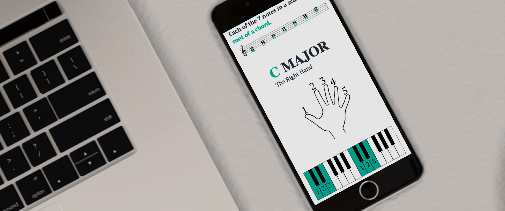
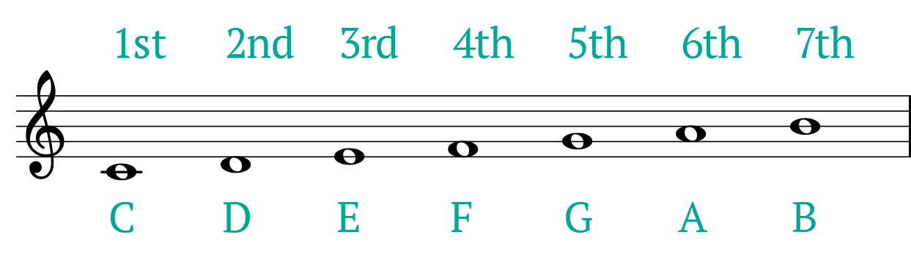
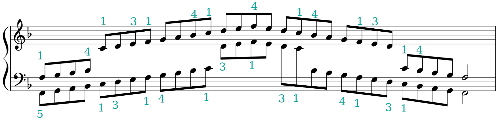

<!DOCTYPE html>
<html lang="en" data-theme="light"></html>
<head>
    <meta charset="UTF-8">
    <meta http-equiv="X-UA-Compatible" content="IE=edge">
    <meta name="viewport" content="width=device-width, initial-scale=1.0">
    <link rel="stylesheet" href="css/main.css">
    <title>Andrew Martin - Instructional Designer</title>
    <link
    rel="stylesheet"
    href="https://cdnjs.cloudflare.com/ajax/libs/animate.css/4.1.1/animate.min.css"
  />
  <link rel="stylesheet" href="https://use.fontawesome.com/releases/v5.12.1/css/all.css" crossorigin="anonymous">
  <link href="http://fonts.cdnfonts.com/css/palatino" rel="stylesheet">
  <style>
     @import url('https://fonts.googleapis.com/css2?family=IBM+Plex+Sans:ital,wght@0,100;0,200;0,300;0,400;0,500;0,600;0,700;1,100;1,200;1,300;1,400;1,500;1,600;1,700&display=swap');
    @import url('http://fonts.cdnfonts.com/css/palatino');

    #navbar {
transition: top 0.3s; /* Transition effect when sliding down (and up) */
}
@import url('http://fonts.cdnfonts.com/css/old-standard-tt-4');

.mytext{
      font-family: 'IBM Plex Sans', sans-serif;
    }

.myfont {
  font-family: 'Palatino', sans-serif;
 }

.myHeader {
  font-weight: 700;
  font-family: "Old Standard TT";
  text-decoration: none;
  vertical-align: baseline;
  font-style: normal;
}

.myGreen {
      color: #00a797;
    }

</style>
</head>
<body>

    <!-- navbar -->
  <!-- This example requires Tailwind CSS v2.0+ -->
  <nav class="bg-transparent navnormal transition ease-in-out delay-150 pt-8" id="navbar">
    <div class="max-w-7xl mx-auto px-2 sm:px-6 lg:px-8">
      <div class="relative flex items-center justify-between h-16">
        
        <div class="flex-1 flex items-left justify-left sm:items-stretch sm:justify-start">
          <div>
            <a href="index.html"></a>
    
          </div>
          <div class="sm:block sm:ml-6 mt-3 mytext font-bold">
            <div class="flex space-x-4 text-l">
              <!-- Current: "bg-gray-900 text-white", Default: "text-gray-300 hover:bg-gray-700 hover:text-white" -->
  
              <a href="index.html#1" class="text-gray-900 hover:underline px-3 py-2 rounded-md font-medium">Portfolio</a>
  
              <a href="about.html" class="text-gray-900  hover:underline px-3 py-2 rounded-md font-medium">About</a>
  
              <!--<a href="#" class="text-gray-900  hover:underline px-3 py-2 rounded-md font-medium">Contact</a>-->
            </div>
          </div>
        </div>
  
      </div>
    </div>
  
    
    </div>
  </nav>
  
  
    
      
        
        
        <!-- hero -->
        <article class="px-4 py-10 mx-auto" itemid="#" >
          <div class="flex flex-col items-center justify-center">
            
          </div>
          <div class="w-full mx-auto text-left md:w-3/4 lg:w-1/2 py-10">
          
          <h1 class="myfont mb-3 text-5xl font-bold leading-tight text-gray-900 md:text-5xl">
            Scales Are Easy
          </h1>
          
        </div>
      
        <div class="w-full mx-auto prose md:w-3/4 lg:w-1/2 max-w-7xl">
         
          <p class="text-3xl mb-12 myfont italic">A fully featured website and accompanying eBook</p>
          <p class="mb-6">This website provides resources and thoughtful curriculum for teaching scales on the piano.</p>
          <p class="mb-4"><span class="font-bold text-lg">Audience: </span>Beginner musicians and music teachers</p>
          <p class="mb-4"><span class="font-bold text-lg">Responsibilities: </span>Instructional Design, Web Design, eLearning Development, Curriculum Design, Graphic Design, Typesetting</p>
          <p class="mb-6"><span class="font-bold text-lg">Tools Used: </span>HTML, Tailwind CSS, Javascript, GIMP, Figma, Visual Studio Code, Google Docs</p>
          
          
          
          
          
         <button class="mb-6 btn text-white bg-blue-700 ml-4 inline-flex py-2 px-6 hover:bg-blue-700 text-lg normal-case transition ease-in-out delay-150 hover:scale-110"><a href="https://pianoscales.info" target="_blank" rel="noopener"> Experience the project</a></button>


          <h2 class="mt-6 mb-3 text-3xl font-bold leading-tight text-gray-900 md:text-4xl">
            Problem & Solution
          </h2>
          <p class="mt-6">I was a full-time music instructor when the COVID-19 pandemic began. I swiftly pivoted to teaching 45 students per week remotely over Zoom. I decided to make a music theory resource for my students and colleagues to use — especially so that I didn't have to repeat foundational lessons 45 times each week!</p>

          <p class="mt-6">I synthesized my thoughts on scale pedagogy for the piano in an eBook, and then created a responsive website for all screen sizes. These resources are intended to be a step-by-step guide for the beginner pianist practicing scales. They contain essential exercises and information that will help all students of music to mature their understanding of the piano and advance their technical performance. </p>
          
          <h2 class="text-3xl font-bold leading-tight text-gray-900 md:text-4xl mt-8">Process</h2>
							<p class="mt-6"></p>
							<p class="mt-6">First, I meditated on which parts of a general music curriculum were most universal — and therefore the most repetitive. I also reflected on the pros and cons of current available teaching materials and methodologies. I decided to create a resource dedicated to teaching scales on the piano.</p>
                
                
              <p class="mt-6">Next, I outlined how I teach scales during in-person lessons. I organized all of the most useful information into clearly ordered sections. These sections mirror the structure of how I teach the same concepts as an instructor.</p>

              <p class="mt-6">I used Google Docs to flesh out all of the content in each section, as well as typeset and draft a basic visual layout. I created supporting visuals in GIMP that correspond with each concept and lesson. After finishing the content, I used Calibre to convert my work into various eBook formats.</p>

              <p class="mt-6">I used Figma to mock up a planned website layout featuring the content and images from the eBook. Finally, I used HTML, CSS and Javascript to convert all content into a website.</p>
          </div>
							

              

              <div class="w-full mx-auto prose md:w-3/4 lg:w-1/2 max-w-7xl">
              <h2 class="text-3xl first-letter:leading-tight text-gray-900 md:text-4xl mt-8"><span class="font-bold">eBook Authoring:</span> Google Docs, Calibre</h2>
							<p class="mt-6"></p>
							<p class="mt-6">I created the draft of the <span class="italic">Scales Are Easy</span> eBook in Google Docs. This process was fairly straightforward and mostly involved typsetting, content writing, and editing. <p class="mt-6">During this period I began experimenting with using the pages and materials during lessons as an instructor. I also sent copies to colleagues and friends, as well as to new students.</p>
              <p class="mt-6">I received and implemented a lot of valuable feedback. For example, a background color that looks great on a screen uses unneccesary ink when printed out on paper. </p>
                
              <p class="mt-6">After finalizing a set of resources I was happy with, I used Calibre to convert my work into various eBook formats for distribution.</p>


              </p>
            </div>

              <div class="w-full mx-auto prose md:w-3/4 lg:w-1/2 max-w-7xl">
							<h2 class="text-3xl leading-tight text-gray-900 md:text-4xl mt-8"><span class="font-bold">Visual Design:</span> Figma, GIMP</h2>
							
							<p class="my-6">I used GIMP to manipulate various assets and to create custom visuals for the project. I opted for a sleek duotone color scheme — in reference to the duotone black and white of both sheet music and piano keys. Important information is highlighted with one of two custom colors. Everything else is rendered with shades of black and white.</p>
                </div>
                <div class="w-full mx-auto prose md:w-3/4 lg:w-1/2 max-w-6xl">
              <h2 class="text-2xl leading-tight text-gray-900 md:text-3xl mt-8"><span class="font-bold">Color Scheme</span></h2>
                <div class="grid grid-cols-4">
                  <div style="background-color: #00A797;"class="w-full h-40">

                  </div>

                  <div style="background-color: #E5E7EB;"class="bg-red-500 w-full">

                  </div>

                  <div style="background-color: #6B7280;"class="bg-yellow-500 w-full">

                  </div>

                  <div class="bg-black w-full">

                  </div>

                </div>
              

                <h2 class="text-2xl leading-tight text-gray-900 md:text-3xl mt-16"><span class="font-bold">Title Font: Old Standard TT</span></h2>
              <h2 class="myHeader text-6xl md:6xl lg:text-7xl"><span class="myGreen">SCALES</span><br>ARE EASY</h2>

              <h2 class="text-2xl leading-tight text-gray-900 md:text-3xl mt-16"><span class="font-bold">Intro Visual Asset</span></h2>
             <div class="flex flex-col items-center justify-center">
              
            </div>


            <h2 class="text-2xl leading-tight text-gray-900 md:text-3xl mt-8"><span class="font-bold">Scale Visual Asset</span></h2>
            <div class="flex flex-col items-center justify-center">
             
           </div>
              </div>
            </div>
          
           
           
              <div class="w-full mx-auto prose md:w-3/4 lg:w-1/2 max-w-7xl">
              <p class="my-6">Before beginning web development, I laid out some wireframes and user flows in Figma. I was especially inspired by other design-focused knowledge respositories like Dash Dash, Laws of UX, and Web Field Manual.</p>


              <h2 class="text-3xl leading-tight text-gray-900 md:text-4xl mt-8"><span class="font-bold">Web Development:</span> HTML, Tailwind CSS, Javascript</h2>
							<p class="mt-6">I designed each page to be accessible, easy to navigate, and visually engaging. Bold, contrasting colors are used to highlight important information. Each page features a navigation footer that leads the user to the next chapter in the curriculum.</p>

              <p class="mt-6">I used Tailwind CSS (with some customized additions) to ensure the website remains dynamic, operable and legible regardless of device type, screen size, or chosen browser. All links and other user-driven clickable events are clear and interactive.</p>

              

              
             <button class="mt-6 btn text-white bg-blue-700 ml-4 inline-flex py-2 px-6 hover:bg-blue-700 text-lg normal-case transition ease-in-out delay-150 hover:scale-110"><a href="https://pianoscales.info" target="_blank" rel="noopener"> Experience the project</a></button>


            
        
             
                <h3 class="text-2xl md:text-3xl leading-tight text-gray-900 mt-8"><span class="font-bold">Features</h3>

                  <div class="ml-8">
                  
                  <ul class="list-disc">
                    <li>
                    <span class="mt-6 flex flex-row items-start justify-start mb-2 md:mb-3">
                      <span class="ml-3"><span class="font-bold">Progressive Curriculum: </span>Six step-by-step units clearly outline the information neccesary for a beginner to study musical scales on the piano. The curriculum is designed for ease of use on behalf of the student and teacher.</span>
                    </span>
                    </li>

                    <li>
                      <span class="mt-6 flex flex-row items-start justify-start mb-2 md:mb-3">
                        <span class="ml-3"><span class="font-bold">Downloadable eBook: </span>For learners who want to access or print the scale book without an internet connection.</span>
                      </span>
                      </li>

                      <li>
                        <span class="mt-6 flex flex-row items-start justify-start mb-2 md:mb-3">
                          <span class="ml-3"><span class="font-bold">Custom Visuals: </span>Each unit is illustrated with an inviting duotone color palette that clearly highlights useful information. These colors expand traditional paper and ink formats of scale books by emphasizing the visual aspect of playing an instrument, as well as create a smooth user experience.

                        </span>


                        </span>
                        </li>

                        <li>
                          <span class="mt-6 flex flex-row items-start justify-start mb-2 md:mb-3">
                            <span class="ml-3"><span class="font-bold">Responsive Design: </span>Each page is programmed to be rendered dynamically based on screen size. To achieve this, I used Tailwind CSS to generate media screen size queries that alter the display of elements. In addition, I created clear hover events that succinctly clarify site navigation. 
                            
                          </span>
  
  
                          </span>
                          </li>


                  </div>


              </div>
              </div>

              <div class="w-full mx-auto prose md:w-3/4 lg:w-1/2 max-w-7xl">
                <h2 class="text-3xl leading-tight text-gray-900 md:text-4xl mt-8 font-bold">Reflection</h2>
                

                <p class="my-6">The process of creating the <span class="italic">Scales Are Easy</span> resources provided me with several key takeaways:</p>

                <div class="ml-8">
                  
                  <ul class="list-disc">
                    <li>
                    <span class="mt-6 flex flex-row items-start justify-start mb-2 md:mb-3">
                      <span class="ml-3"><span class="font-bold">Future Methods: </span>I believe the future of instructional design will resemble the intersection between user experience design, web development, and product design. There is true power in giving an end user agency in sourcing their information, and in sculpting their learning journey to be as simliar and enjoyable as their own normal web browsing habits. 
                
                    </span>
                    </span>
                    </li>
                    <li>
                      <span class="mt-6 flex flex-row items-start justify-start mb-2 md:mb-3">
                        <span class="ml-3"><span class="font-bold">Iterate & Grow: </span>This project began as handouts and resources for me to use while teaching remote music lessons, but ultimately grew into an organized knowledge repository for a much larger audience. I enjoy being able to offer tools for growth that scale up along with the audience.
                      </span>
                      </span>
                      </li>

                      <li>
                        <span class="mt-6 flex flex-row items-start justify-start mb-2 md:mb-3">
                          <span class="ml-3"><span class="font-bold">User Experience (UX): </span> It's too easy to be more interested in screens than in the world around us — luckily, that works in my favor for this project. I designed each element to be user-friendly and feature clear navigation and accented colors. I believe in designing learning resources to be visually appealing — otherwise they will be easily ignored or replaced. Although I enjoy my vintage piano books, my students are more engaged with interactive digital tools.
                        </span>
                        </span>
                        </li>   
                        
                        <li>
                          <span class="mt-6 flex flex-row items-start justify-start mb-2 md:mb-3">
                            <span class="ml-3"><span class="font-bold">Code: </span> I really enjoyed creating my own dynamic cascading style sheets (CSS) and HTML markup during the web design portion of this project. Coding CSS inline with a framework like Tailwind was a simple choice. I prefer Tailwind to other frameworks, because it is not highly opinionated and isn't affiliated with massive social media companies like Twitter, (Bootstrap) Facebook, (React) or Google (Angular). I decided against creating a single page application (SPA) for this project — instead opting to treat each page as a different chapter or section, with clear navigation between pages available in the header and footer.
                          </span>
                          </span>
                          </li>                      
                        </ul>
                        </div>

                <p class="my-6">As an instructional designer, I had a great time bringing my own methodology and curriculum for a subject I'm passionate about to life in different formats. I look forward to hearing from other teachers and learners that use it on their musical journey.</p>


                </div>
                
              </div>


					</div>

          <h3 class="pt-20 text-2xl md:text-3xl leading-tight text-gray-900 mt-8 myfont ml-20"><span class="font-bold">Check out another project:</h3>


				
          </article>
          
    
    <!-- portfolio -->
    <section class="text-gray-900 body-font">
      <div class="container pb-10 px-5 mx-auto reveal fade-bottom">
        <div class="flex flex-wrap -mx-4 -mb-10 text-center">
          <div class="sm:w-1/2 mb-10 px-4">
            <div class="group rounded-lg h-64 overflow-hidden relative">
              <a href = "gf-food.html" class="absolute inset-0 z-10 bg-blue-700 text-center flex flex-col items-center justify-center opacity-0 group-hover:opacity-90 bg-opacity-90 duration-300 text-3xl text-white">
                <h1  class=tracking-wider >Gluten-Free Food Preparation</h1>
                <p  class="mx-auto italic text-lg">Articulate Storyline 360, Figma, GIMP</p></a>
              <a href="#">
                </a></img>
                
            </div>
          </div>
      </article>
      


    </div>
  </div>
</section>

  

  <!-- Call to action -->
  <section class="text-white bg-blue-700">
    <div class="flex flex-col items-stretch justify-between px-4 py-16 md:py-20 mx-auto max-w-7xl lg:flex-row sm:items-center">
      <div>
        <h2 class="mb-1 text-xl font-semibold text-left sm:text-2xl sm:text-center lg:text-left">Let's make an impact.</h2>
        <p class="mb-6 text-lg font-normal text-left text-gray-200 sm:text-xl lg:mb-0 sm:text-center lg:text-left">Hire me to build your next effective learning experience.</p>
      </div>
      <div class="flex flex-col mb-2 space-x-6 sm:space-x-6 sm:space-y-2">
        
        <div><p id="copied"></p></div>
        <button onclick="copyText()"class="btn bg-white text-black hover:bg-gray-900 hover:text-white inline-flex py-2 px-6 text-lg normal-case transition ease-in-out delay-150 hover:scale-110"><i class="fas fa-copy mr-2"></i>andylearninglab@gmail.com</button>
        <p class="mb-6 text-lg font-normal text-center text-gray-200 sm:text-xl lg:mb-0 mytext">Click to copy my email address.</p>
      </div>
    </div>
  </section>

  
<script src="index.js"></script>
<script>
  function copyText() {
       
       /* Copy text into clipboard */
       navigator.clipboard.writeText 
           ("andylearninglab@gmail.com");
 
           document.getElementById("copied").innerHTML = "Copied!";
  }
 </script>
</body>
</html>